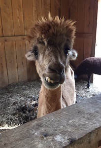

For more information:
Contact Karen Phillips, VMD
Founder of Hope Haven
Karen@HopeHavenFarm.org
Sign Up For Our e-Newsletter

Contact Info:
Email:
Karen@HopeHavenFarm.org
UPCOMING EVENTS:
Hope Haven participates in many festivals and fundraisers during the open season of May through October. Please see the Events section of our monthly e-newsletter and the events tab of our FaceBook page to get involved with all the activities.
Our biggest upcoming event is Biscuits Bingo on March 4th, 2017. It takes place at IBEW Hall at 5 Hot Metal Street. There will be raffle baskets, door prices, and (obviously) BINGO! There's a $25 admission fee, which goes toward the benefiting organizations. Doors open at 10am and bingo starts at noon!
SOCIAL MEDIA:Please share us with your friends everywhere! Keep up with all the fun going on at the farm!!


IN THE NEWS:
Here are the various places that have featured Hope Haven!
Feature in November NEXT Pittsburgh
Short You Tube piece called Hope for Animals by Brians Art for Animals
July/August edition of Maniac Magazine, page 68-69
Feature on "Animal Talk with Tegan" on radio 1480 WCNS
Social Venture Partner's Fast Pitch competition
Setting the SEEN clip about Hope Haven Farm
Blog post about the Setting the SEEN clip
Great You Tube piece from Jillclimbs
Channel 11 News with Peggy Finnegan - Proud to be from Pittsburgh: Hope Haven Farm